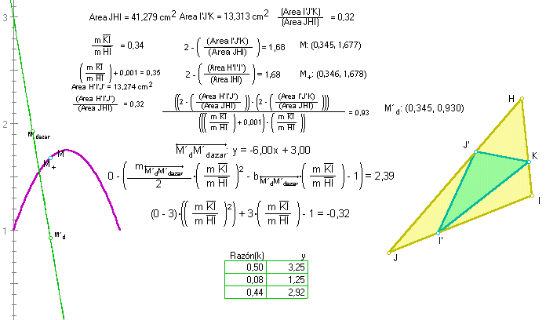
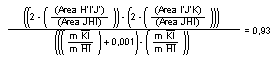
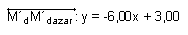
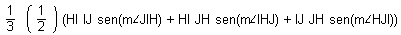
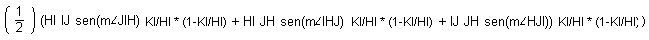

Solución de una ampliación del problema
62.
96.- Inscribir en un triángulo equilátero
de lado 8 cm otro triángulo equilátero. Calcular el área
del inscrito en los casos en que el vértice del inscrito diste del dado
en 1 cm, 2 cm, ... 7 cm. ¿Cómo varía esta área?, ¿Cuál
es el triángulo inscrito de área mínima?. Trazar el gráfico.
Ampliemos a:
Al "inscribir" en un triángulo HIJ cualquiera
otro que se forme a partir de vértices KI´J´ que distan en igual proporción
de los respectivos HIJ. ¿Cómo varía la relación entre sus
áreas? ¿Hay un factor que en todos los casos procure el "inscripto" de
área mínima en relación con el que lo inscribe? ¿Podría
representarse esta relación general gráficamente?
---- Este problema es de sencilla resolución
apelando o a un poco de análisis o a las herramientas dinámicas
o a una económica mezcla de ambas.
Pero sea como fuese, una vez resuelto, basta con
pasar de lo general a lo estrictamente particular, calculando los valores que
quedan determinados para la situación específica que plantea el
62:
- que HIJ no es cualquiera, sino equilátero,
por ejemplo
- que para más datos, el vértice distará
del dado según un factor

- que es necesario que fijemos a 8 cm la medida del
lado del equilátero HIJ
Aquí aparece el dibujo de la resolución y su explicación,
la detallo a continuación.
- Construyo un triángulo cualquiera HIJ
- Ubico al azar un punto cualquiera K sobre el lado HI
- Establezco la razón KI/HI como factor
de dilatación para ubicar en proporción análoga respecto
de los correspondientes vértices a los puntos J´ sobre HJ y a I´ sobre
IJ.
- Construyo el triángulo KJ´I´ "inscripto" en HIJ
- Mido las respectivas áreas de uno y otro triángulo y establezco
la razón entre ambas tal como puede leerse (Area
I'J'K)/Area JHI)
- Calculo 2 - (Area I'J'K)/Area JHI) para
tener una exposición más clara (como se comprenderá después).
- Grafico el punto M que tiene como coordenada X al valor de la razón
KI/HI y como coordenada Y el valor de 2
- (Area I'J'K)/Area JHI)
- Construyo el lugar geométrico que traza el punto M a medida que el
punto K se desplaza por el lado HI y obtengo así el trazo lila que
parece una parábola y que así se conserva, resistiendo "parabólicamente"
a toda deformación del triángulo HIJ o reposicionamiento del
punto K.
- Para corroborar gráficamente que el trazo lila es el de una parábola
y determinar la función que la "respalda", paso a averiguar cuál
es el cociente incremental entre la relación de áreas al factor
proporcional de "inscripción". Ver:

- Construyo el punto M´d que tiene como coordenada X el valor de la razón
KI/HI y como coordenada Y igual a valor de:
- Construyo el lugar geométrico que traza el punto M´d a
medida que el punto K se desplaza por el lado HI y obtengo así el trazo
verde que parece francamente una recta y que así se conserva, resistiendo
"rectamente" a toda deformación del triángulo HIJ o reposicionamiento
del punto K.
- Para verificar la "rectitud" del trazo verde, construyo sobre éste
un punto al azar M´dazar y trazo la recta que lo une a M´d.
y observo que efectivamente, la recta obtenida coincide con el
trazo verde.
- Pido la ecuación de la recta M´dM´dazar que
es, por construcción, la que corresponde a la derivada gráfica
del trazo verde y es igual a:

- La integral de -6x+ 3 con constante de integración adecuada (el 1
que corresponde) es la ecuación de la parábola lila (ya definitivamente,
parábola): -3x2 + 3x -
1
- Tal como puede verse el máximo de la parábola se produce para
un valor igual a ½ que es lo que nos indica que el valor de área mínima
del triángulo inscripto es ¼ del área del que lo inscribe y
corresponde al punto medio del lado del que lo inscribe. - En el caso del
equilátero de 8 cm de lado, la cuarta parte del área es ¼* 16
* rc(3) o sea 4 * rc(3) – El valor del máximo de la parábola
coincide con el que hace cero a su derivada, por otro lado.
- Me dedico a tomar los valores específicos que puedo necesitar para
resolver algún caso específico como el del problema 62.
- Paso a verificar si la solución gráfica coincide con la posible
analítica.
Analíticamente, puedo decir que el área de un triángulo
cualquiera es igual a 1/3 de la suma de tres términos que son ½ del producto
de dos lados concurrentes por el seno del ángulo que forman:

y que para obtener el área del inscripto, tengo que restar tres porciones
triangulares, cada una de las cuales es ½ del producto de los lados concurrentes
por el seno del ángulo que forman y por la razón de la proporción
o factor proporcional de ubicación por (1-factor proporcional de ubicación):

Operando simplemente, se obtiene la ecuación que corresponde exactamente
con la de la parábola lila, con lo que queda verificada la resolución
gráfica.